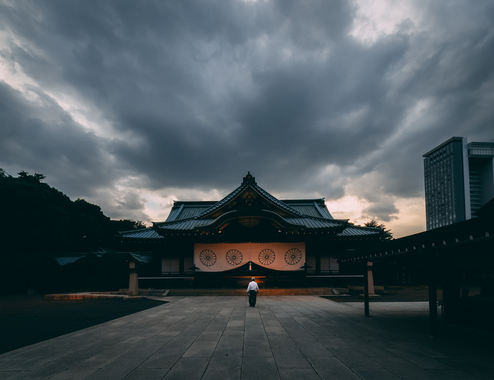
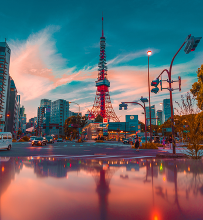
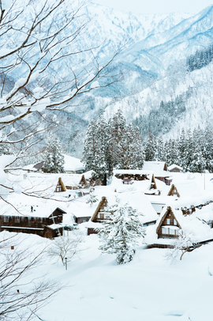

Scattered across the tiny fishing island of Naoshima is a contemporary art haul that would turn the Tate Modern green with envy. Following investment from a wealthy Japanese publishing magnate, the island’s status as part of a major art hub was confirmed in 2010 with the launch of Setouchi Triennale, a three yearly festival of art that takes place across 12 islands in order to benefit the elderly fishing communities on each.
There are countless local festivals (matsuri) in Japan because almost every shrine celebrates one of its own. Most festivals are held annually and celebrate the shrine's deity or a seasonal or historical event. Some festival are held over several days. An important element of Japanese festivals are processions, in which the local shrine's kami (Shinto deity) is carried through the town in mikoshi (palanquins). It is the only time of the year when the kami leaves the shrine to be carried around town.Many festivals also feature decorated floats (dashi), which are pulled through the town, accompanied by drum and flute music by the people sitting on the floats. Every festival has its own characteristics. While some festivals are calm and meditative, many are energetic and noisy.
When it comes to vibrant, bustling cities, Japan can deliver. The country holds many population hubs to explore and uncover. Tokyo, the capital of Japan, is undeniably a vibrantly buzzing city, holding within it a range of exciting attractions to enjoy. Although the city is quite modern, containing a collection of theme parks such as Disneyland, scattered throughout the city are also a range of temples, markets and palaces to explore. Kyoto, Japan’s past capital, is a much more traditional city. A range of temples, bamboo forests and mountainside shrines are sprinkled throughout Kyoto, and offer very traditional memorable experiences. The city of Osaka is another bustling city to visit. The city is home to beautiful castles, towering observatories, colourful gardens and even a Universal Studios.
A rail pass is a must for a longer visit to Japan and one takes you all over the country in a super-fast, clean and comfortable style. It is available from £199 for 7, 14 or 21 days and includes travel on trains owned by six different companies. City stations have dedicated booths serving those with a pass (with staff who can direct you to a platform, which is handy if you don't understand Japanese). There is no additional charge for reserving seats.
Home to a range of delightful foods and treats, pleasing every sense from sight to smell; Japan contains an extensive range of flavours to discover. High upon most Japan bucket lists is the chance to eat sushi in Tokyo. Across the city, an array of charming restaurants can be uncovered, that prepare guests fresh, quality sushi, unlike anything ever experienced. Some other traditional dishes to try when visiting include tempura, miso soup and sashimi. Tasting the cuisine of Japan is essentially an experience within itself. Expand the palate and indulge in some of Japans delicious, traditional foods.
Onsen bathing - where you should expect to be surrounded by naked members of the same sex, sitting with neatly folded flannels on their heads - offers, in the same way that many Japanese cultures do, a mix of physical benefits, relaxation, unintrusive companionship, carefully observed etiquette and calm communing with nature.
Japanese snow has been called the “lightest and fluffiest known to man”, so there is every reason the give Europe’s Alps a miss next season and visit Japan’s instead. In its snowiest years, resorts in Hokkaido, such as Niseko, Rusutsu and Furano can receive up to 17m of the white stuff, making it the holy grail of powder skiing.
